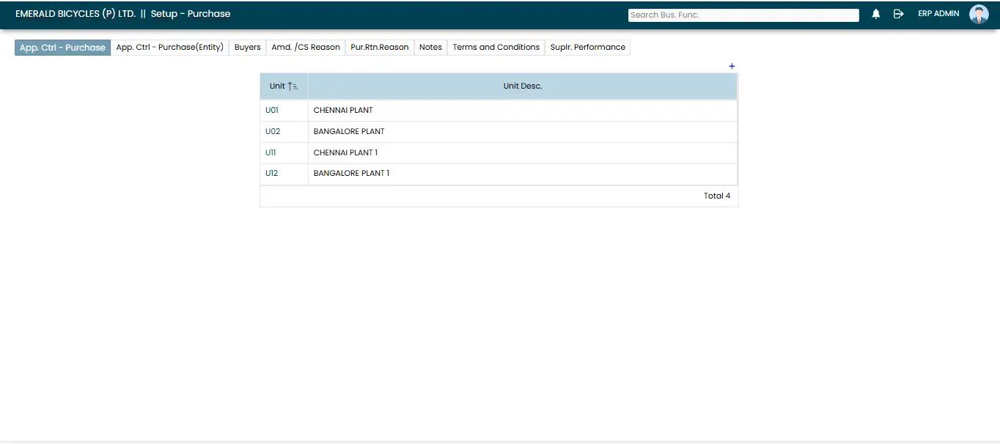
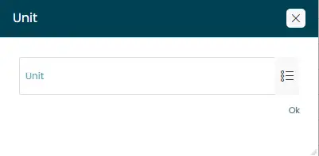
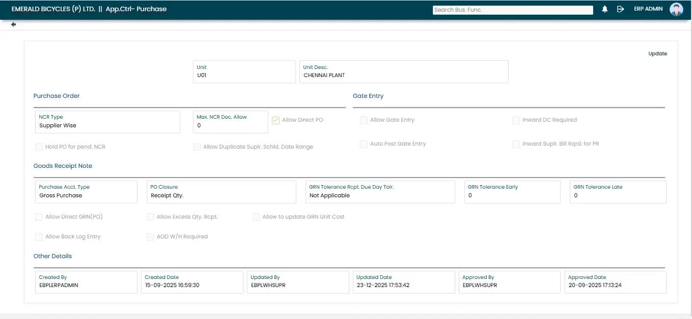
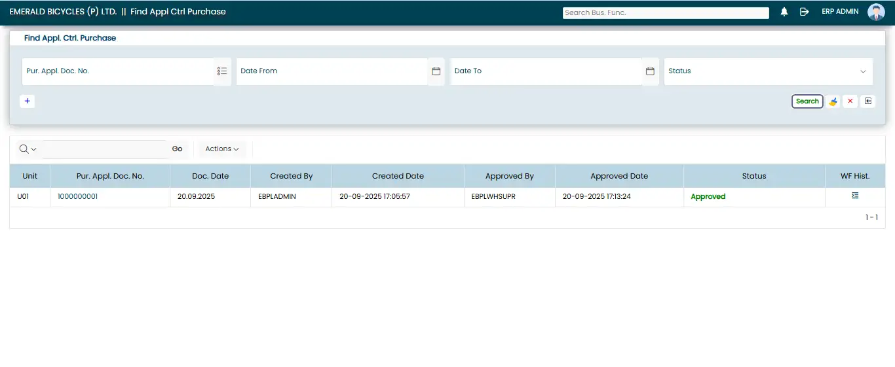
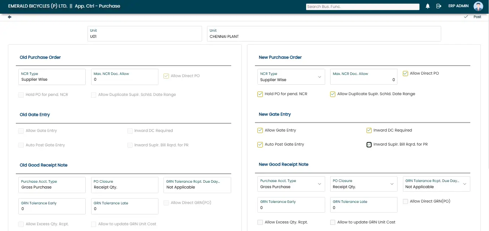

<div data-category="Purchase Order" data-title="Appl. Control (Purchase Order)" data-updated="December 01, 2025" data-contributors="RoadmapIT" data-breadcrumb="Home,Purchase Order,Appl. Control (Purchase Order)">
  <div class="page-content">
    <p>Application Control in Purchase Order Management involves configuring the essential settings and parameters that govern the purchase order process. This includes defining approval workflows, setting user permissions, and establishing business rules to ensure a streamlined, secure, and efficient procurement process.</p>

    <h5>Navigation path:</h5>
    <p class="fs-6">Supply Chain \ Purchasing \ Setup \ Setup-Purchase \ App.Ctrl - Purchase</p>

    
    <ul style="list-style-type: none; align-content: center">
      <li class="mouse-icon">
        Click
        <i class="bi bi-plus fs-4 mx-2 text-primary"></i>
        button to create a new unit.
      </li>
    </ul>

    
    <ul style="list-style-type: none; align-content: center">
      <li class="mouse-icon">Select Unit from LOV.</li>
      <li class="mouse-icon">Click “Ok”.</li>
      <li class="mouse-icon">Select the created unit.</li>
    </ul>

    

    <h2>1. Unit</h2>
    <p>The Control of the Purchase order management for the Unit is defined.</p>

    <h2>2. Allow Direct PO</h2>
    <p>The Purchase order can be created without creating the Purchase request.</p>

    <h2>3. Allow Duplicate Suplr. Schld. Date Range</h2>
    <p>If the flag is enabled, System Allow to complete the Duplicate Supplier Schedule Document.</p>

    <h2>4. Hold PO for pending NCR</h2>
    <ul>
      <li><strong>On Disabled Condition</strong> – If there is pending NCR documents for the suppliers for which a PO is created, a note alert will be thrown for indicating the pending NCR documents.</li>
      <li><strong>On Enabled Condition</strong> – The Field ‘Max. NCR doc. Allowed’ field is considered. If the pending NCR documents for the supplier for which a new PO is created, exceeds the max allowed doc, a stop alert will be thrown and the PO cannot be processed anymore.</li>
    </ul>

    <h2>5. NCR Type</h2>
    <p>NCR document can be calculated, based on following types.</p>
    <ul>
      <li><strong>Item Wise:</strong> NCR document will be generated based in the Item.</li>
      <li><strong>Supplier Wise:</strong> NCR document will be generated based on the Supplier.</li>
    </ul>

    <h2>6. Allow Gate Entry</h2>
    <p>The Document will be moved to Gate Entry after the Purchase order is approved. If unchecked, the document will be sent for Goods Receipt Note.</p>

    <h2>7. Inward DC required</h2>
    <p>Inward DC field is mandatory for the gate document to get completed if the flag is checked.</p>

    <h2>8. Inward Suplr. Bill required (PR)</h2>
    <p>Inward Suplr. Bill field of Purchase document is mandatory for the gate document to get completed if the flag is checked.</p>

    <h2>9. Auto Post Gate Entry</h2>
    <p>When the flag is enabled, Gate entry document is auto posted simultaneously while creating from Pending Inward.</p>

    <h2>10. Allow Direct GRN</h2>
    <p>The GRN can be created without creating the Purchase Order.</p>

    <h2>11. PO Closure</h2>
    <p>There are two types-Receipt Qty and Accept Qty.</p>
    <ul>
      <li><strong>Receipt Qty:</strong> If the purchase order quantity is rejected Partially/Wholly, the Purchase order can be created again for the Rejected quantity.
        <br>PO Qty-100 Rejected Qty-50
        <br>The New Purchase order can be created for the rejected quantity and the order is received.
      </li>
      <li><strong>Accept Qty:</strong> If the purchase order quantity is rejected Partially/Wholly, the rejected quantities are received against the same order.
        <br>PO Qty-100 Rejected Qty-50
        <br>The order will be in Open status until the PO of rejected 50 quantities is approved.
      </li>
    </ul>

    <h2>12. Purchase Acct. type</h2>
    <ul>
      <li><strong>Net Purchase:</strong> If discount % is set for the purchase, the amount is deducted from the total amount and Journal will be created after deduction. But the deduction is not mentioned in the Journal.</li>
      <li><strong>Gross Purchase:</strong> If discount % is set for the purchase, the amount is deducted from the total amount and Journal will be created. A separate line will be displayed in the journal to indicate the discount deduction.</li>
      <li>Check-Net Purchase</li>
      <li>Un Check-Gross Purchase</li>
    </ul>

    <h2>13. AOD Warehouse Rqrd.</h2>
    <p>During inspection, the AOD (Accept on Deviation) quantities will be moved to AOD warehouse if the flag is checked, else the AOD quantities will be moved to the accepted store.</p>
    <p class="fst-italic">(Note: AOD Type of Warehouse should be configured in warehouse master CFG0191)</p>

    <h2>14. Allow Excess qty. Rcpt</h2>
    <p>If the PO quantity is received in excess, the excess qty in the order can be allowed/not allowed based on the flag enable/Disable conditions respectively.</p>

    <ul style="list-style-type: none; align-content: center">
      <li class="mouse-icon">Click “update” button to update the unit details or to enable the certain flags, which will open the below mentioned screen.</li>
    </ul>

    
    <ul style="list-style-type: none; align-content: center">
      <li class="mouse-icon">Select the Document, this will show the document changes to be made between old and new status.</li>
    </ul>

    
    <p>Users can update, enable, or disable specific fields or flags in the Unit document. Additionally, this screen provides information about the user who created and updated the document, including the date and the approver's details.</p>

    <ul style="list-style-type: none; align-content: center">
      <li class="mouse-icon">
        Click
        <i class="bi bi-check-lg fs-4 mx-1 text-success"></i>
        (save) and “Post” the document and the Unit details will be updated accordingly.
      </li>
    </ul>
  </div>
</div>
